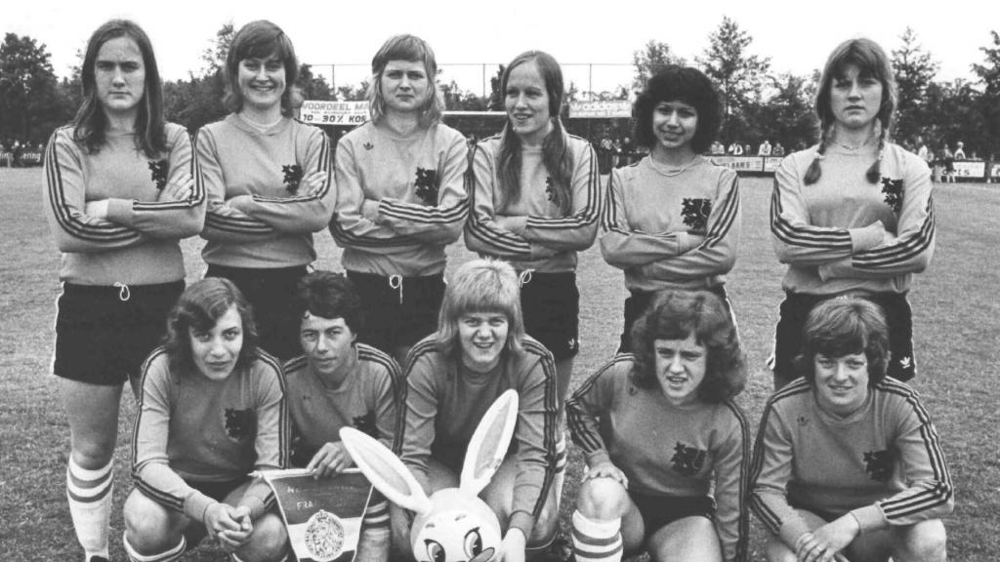

Eerste jarenIn 1924 startte de eerste vereniging officieel met het vrouwenvoetbal. Het idee van voetballende vrouwen werd toen nog niet zo gewaardeerd. De vrouwen hoorden echtgenote, moeder of geliefde van voetbalspelers te zijn. Mede door de economische crisis en in de jaren dertig en de Tweede Wereldoorlog bleef de ontwikkeling van het vrouwenvoetbal op een laag pitje staan. Op 16 april 1955 werd de Algemene Damesvoetbalbond opgericht en op 23 september 1956 speelde het Nederlandse vrouwenelftal voor het eerst een wedstrijd. Officieel was dit nog niet en pas op 9 november 1973 speelden de vrouwen voor het eerst onder de vlag van de KNVB (KoninklijkeNederlandseVoetalBond). In het plaatje hieronder zie je het vrouwenelftal in 1971. |
